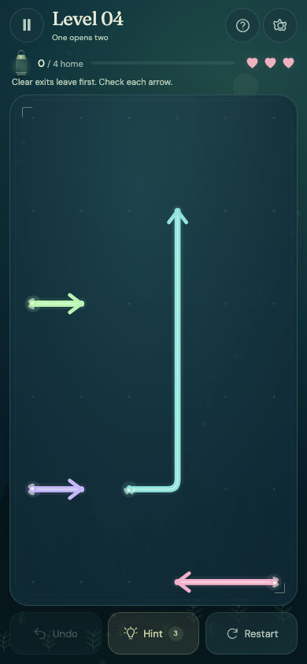

A forest to explore
Five chapters introduce new arrangements, moonstones and linked moon-marked pairs across 60 puzzles.
An Android puzzle game in development
Follow the glow into a quiet forest. Find the right order to release tangled arrow trails, and guide every firefly home.
Intended for ages 13+. Release testing is in progress; a public store listing is not yet available.

Find the way home
Each arrow needs a clear exit. Look ahead, choose a trail, and watch the board open up as the fireflies leave.
Follow the direction of each glowing arrow and see what stands in its way.
Release a trail with a clear exit to make room for the next one.
Clear the board, then discover another puzzle deeper in the forest.
Inside the current build
Five chapters introduce new arrangements, moonstones and linked moon-marked pairs across 60 puzzles.
Return for a daily puzzle and unlock six lanterns as you make your way through the game.
Undo, restart and free hints help you try another approach. Optional rewarded ads offer extra hints; occasional interstitial ads are integrated.
Adjust sound, music and haptics, or enable reduced motion. Progress and game settings are saved locally on your device.
These details describe the development build. Features and availability may change before release.
Made with care
Masood Ur Rehman
Developer of Firefly Exit. For support, feedback or privacy questions, get in touch by email.
masoodbarkiwork@gmail.comLearn how the game handles local saves, advertising and consent in the Firefly Exit privacy policy.